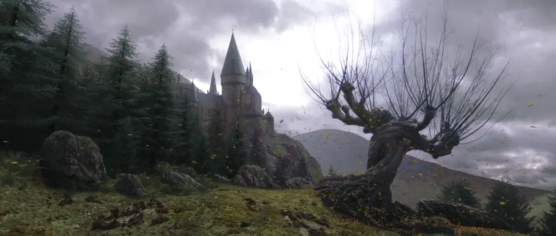
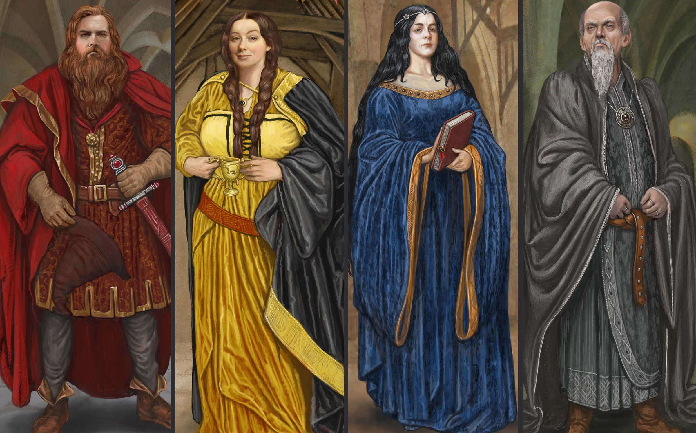
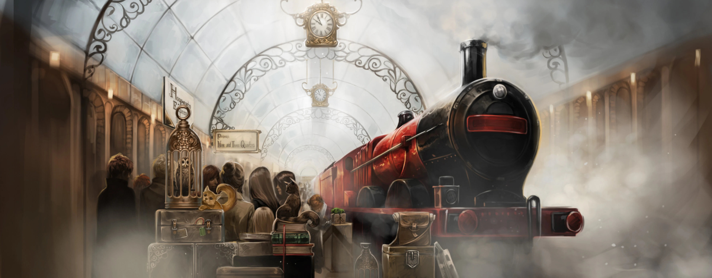

About Hogwarts
Hogwarts School of Witchcraft and Wizardry, often shortened to Hogwarts, is a Scottish wizarding school located in the Scottish Highlands. We accepts any magical student residing in the islands of Great Britain and Ireland at the age of eleven years old at the start of the incoming term for enrolment. We are a state-owned school, funded by the British Ministry of Magic.
The precise location of the school could never be uncovered because it is rendered Unplottable. To Muggles (non-magical people), the school appeares to be an old, abandoned castle. Similarly, most wizarding schools' locations are protected in order to prevent their ways of teaching being revealed, as well as protect the students and schools themselves from any harm.
Hogwarts School, located somewhere in the Highlands of Scotland, consists of the large Hogwarts Castle and extensive school grounds surrounding it, which includes sloping lawns, flowerbeds, vegetable patches, as well as a loch (called the Black Lake), a large dense forest (called the Forbidden Forest), several greenhouses and other outbuildings, and a full-size Quidditch Pitch. One of the castle's towers holds an owlery, which houses all the owls owned by the school and by students.
Hogwarts was founded around 990 A.D. by four of the greatest wizards and witches of the age: Godric Gryffindor, Helga Hufflepuff, Rowena Ravenclaw, and Salazar Slytherin. They each represented an aspect of personality that they wanted to bring out in new students. They also placed certain protective enchantments in place to ensure the well-being of their students, for which reason the castle and grounds have always been protected with Anti-Apparition Charms.
The new term will begin on 1 September, every year. Students usually reaches Hogwarts via the Hogwarts Express, which left Platform 9¾ of London's King's Cross Station at 11 a.m. sharp. be aware that King's Cross Station is a muggle-station, so do your best to blend in. Please wear muggle-clothes for this occasion (you are able to change to your wizarding robes on the train). When you are entering Platform 9¾, do so discreetly, muggles are not used to people wanishing into the walls. It is recomended that all students travel to the station with a guardian.
Hogwarts boats and The Sorting Ceremony
The Hogwarts boats are traditionally used to transport the first-year students, accompanied by the Keeper of the Keys, across the Black Lake from Hogsmeade station to the castle at the start of the school year. Older students will be transported via carriages.
Just before the Start-of-Term Feast will begin, new students are Sorted into one of four houses (Gryffindor, Hufflepuff, Ravenclaw, and Slytherin) by the Sorting Hat. The Hat analysed each student's mind, looking for specific characteristics that it used to decide where to put each student. After the Sorting, the Headmaster will say a few words and the feast would begin.